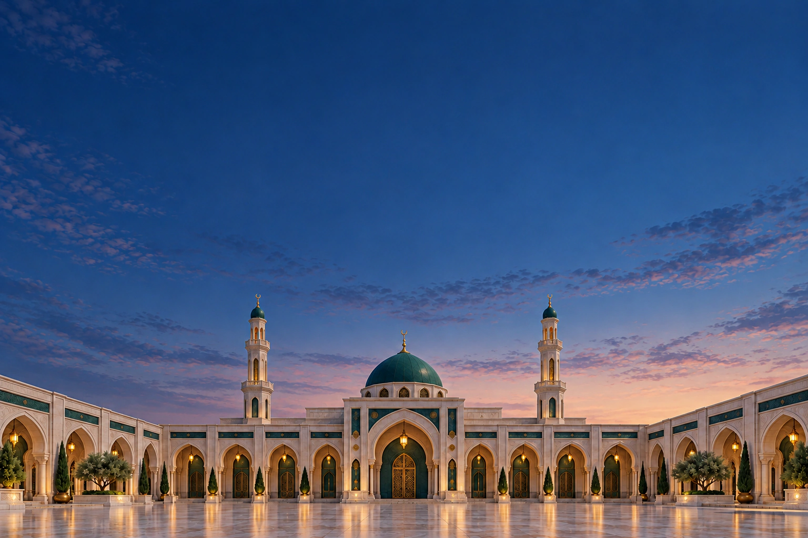
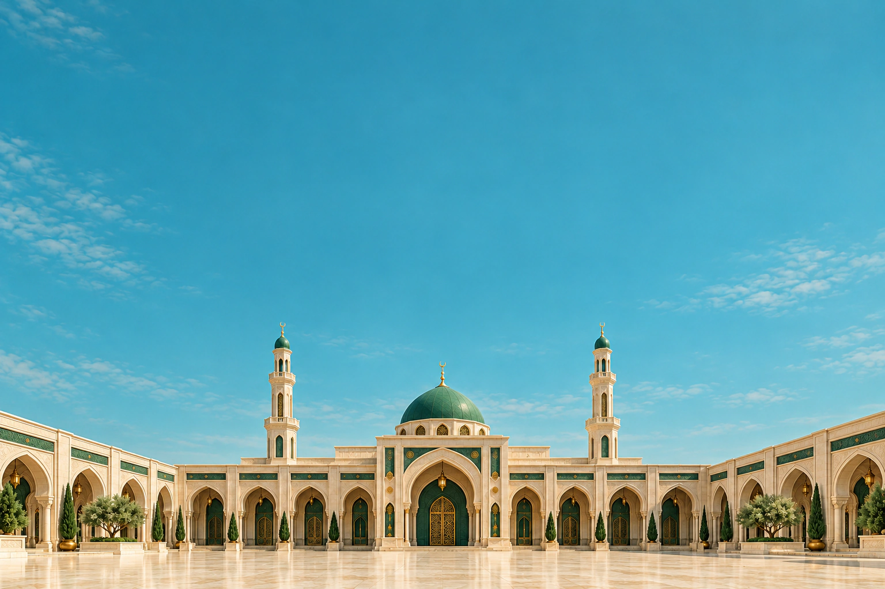
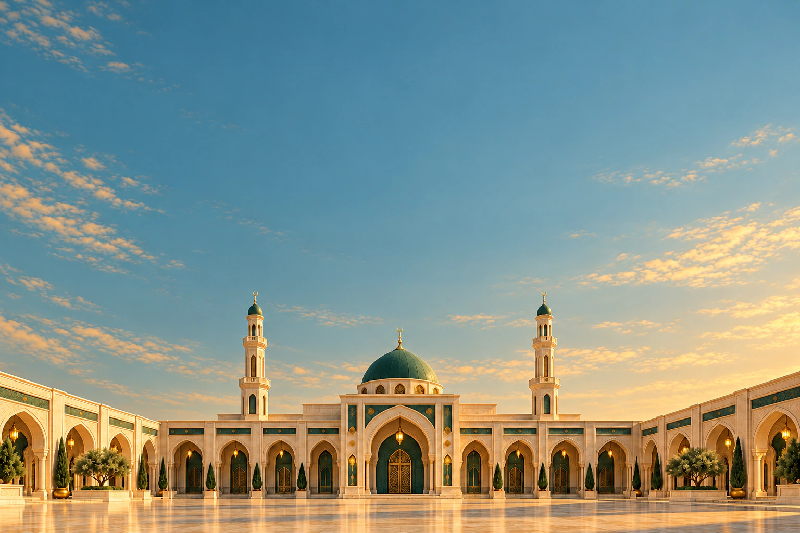
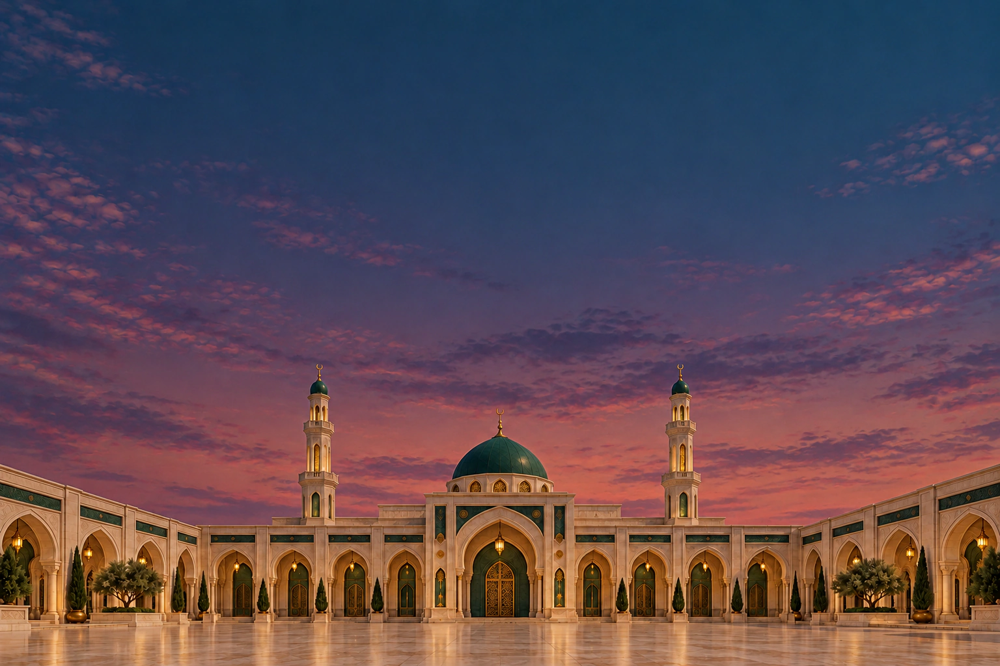
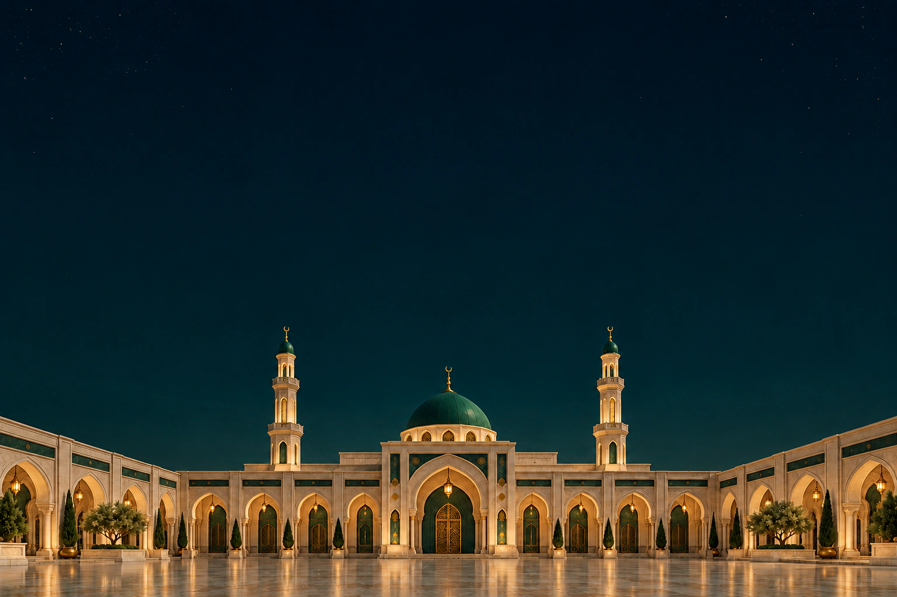

<!doctype html>
<html lang="de">
<meta charset="utf-8">
<meta name="viewport" content="width=device-width,initial-scale=1">
<title>Nur Islam · Fünf Lichtstimmungen</title>
<style>
*{box-sizing:border-box}body{margin:0;padding:40px;background:#001b16;color:#f5f0e6;font-family:Georgia,serif}header{max-width:1200px;margin:0 auto 28px}header p{color:#e2bf77;font:12px/1.5 system-ui;letter-spacing:.12em;text-transform:uppercase}h1{margin:8px 0;font-weight:400;font-size:34px}header small{font:14px/1.5 system-ui;color:#c8d4cf}main{display:grid;grid-template-columns:repeat(5,minmax(0,1fr));gap:14px;max-width:1200px;margin:auto}figure{margin:0}img{display:block;width:100%;aspect-ratio:2/3;object-fit:cover;border-radius:10px}figcaption{padding:14px 0;font:13px/1.6 system-ui}strong{display:block;color:#e2bf77;font-size:15px}span{color:#c8d4cf}@media(max-width:700px){body{padding:24px}main{grid-template-columns:repeat(2,minmax(0,1fr))}h1{font-size:28px}}
</style>
<header><p>Nur Islam · Bildserie</p><h1>Ein Hof. Fünf Lichtstimmungen.</h1><small>Gleiche Perspektive, Smaragdgrün und Elfenbein, warmes Licht in den Bögen.</small></header>
<main>
<figure><figcaption><strong>Fajr</strong><span>Morgendämmerung</span></figcaption></figure>
<figure><figcaption><strong>Dhuhr</strong><span>Tageslicht</span></figcaption></figure>
<figure><figcaption><strong>Asr</strong><span>Nachmittagslicht</span></figcaption></figure>
<figure><figcaption><strong>Maghrib</strong><span>Abenddämmerung</span></figcaption></figure>
<figure><figcaption><strong>Isha</strong><span>Nacht</span></figcaption></figure>
</main>
</html>
